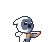

Jump Jump Rabbit

OYUNA BAŞLA
Bilgisayarda klavye kontrolleri ile oynanacak :
← → Sol/Sağ Ok: Hareket
↑ Space: Zıplama
↑↑ Z: Özel zıplama (havuç gerektirir)
R: Oyunu yeniden başlat (oyun bittiğinde)
[ Oyun yüklenirken lütfen bekleyiniz ]
Ceren Eroğlu-Azra Şevval Küpeli